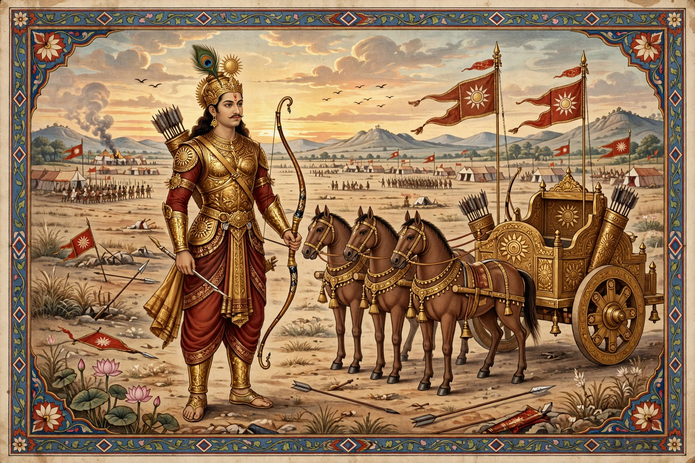

From Wikipedia, the free encyclopedia

| Affiliation | Kaurava army; King of Anga |
|---|---|
| Parents | Surya (divine father); Kunti (mother); Adhiratha and Radha (foster parents) |
| Spouse | Vrushali (in folk traditions) |
| Weapons | Bow Vijaya; Brahmastra; Vasavi Shakti dart |
| Texts | Mahabharata |
Karna (Sanskrit: कर्ण, Karṇa), also known as Vasusena, Angaraja and Radheya, is one of the most complex and celebrated characters of the Hindu epic Mahabharata. He is the eldest son of Kunti, born to her by the sun god Surya before her marriage, and was set afloat on a river as an infant and raised by the charioteer Adhiratha and his wife Radha. Unaware of his royal birth, he becomes the closest ally and lifelong friend of the Kaurava prince Duryodhana, who crowns him King of Anga, and fights against his own half-brothers, the Pandavas, in the Kurukshetra War.
Born with divine golden armour (kavacha) and earrings (kundala) fused to his body, Karna grows into a warrior of supreme skill, taught — in many versions — by Parashurama, who curses him to forget his supreme weapon at the moment of greatest need after discovering Karna had concealed his birth. At the Pandavas' archery contest he is humiliated for his supposed low birth; Duryodhana's gift of a kingdom earns Karna's undying loyalty. Before the war, Krishna and Kunti reveal his birth to him, but Karna refuses to abandon Duryodhana, promising Kunti only that he will spare all her sons except Arjuna. Indra, fearing for Arjuna, tricks Karna into giving away his armour and earrings — a gift Karna makes knowingly, receiving in exchange the single-use Vasavi Shakti dart, which he is later forced to expend on the demon-warrior Ghatotkacha.
On the seventeenth day of the war Karna serves as commander-in-chief of the Kaurava army and duels Arjuna. When his chariot wheel sinks into the blood-softened earth and he stoops to free it, Arjuna — urged on by Krishna — strikes off his head. Only after his death do the Pandavas learn he was their brother, a revelation that poisons their victory. Revered as the embodiment of generosity (dana) and of loyalty tested against fate, Karna remains a tragic hero in Indian literature, theatre and folk worship; temples dedicated to him survive in parts of Uttarakhand and Kerala, and his story has inspired countless retellings, including Shivaji Sawant's novel Mrityunjay.
See also: Mahabharata